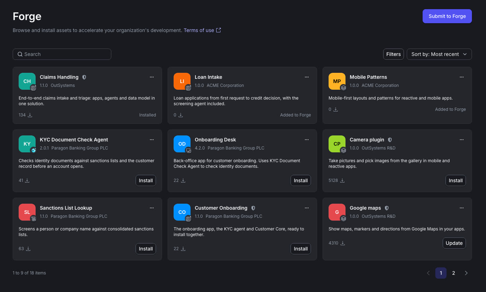
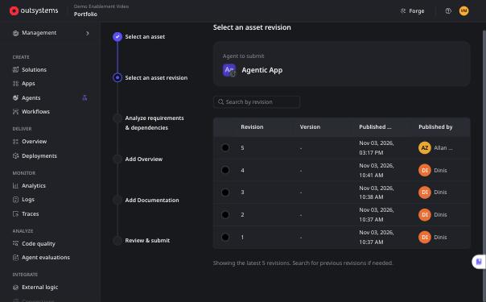
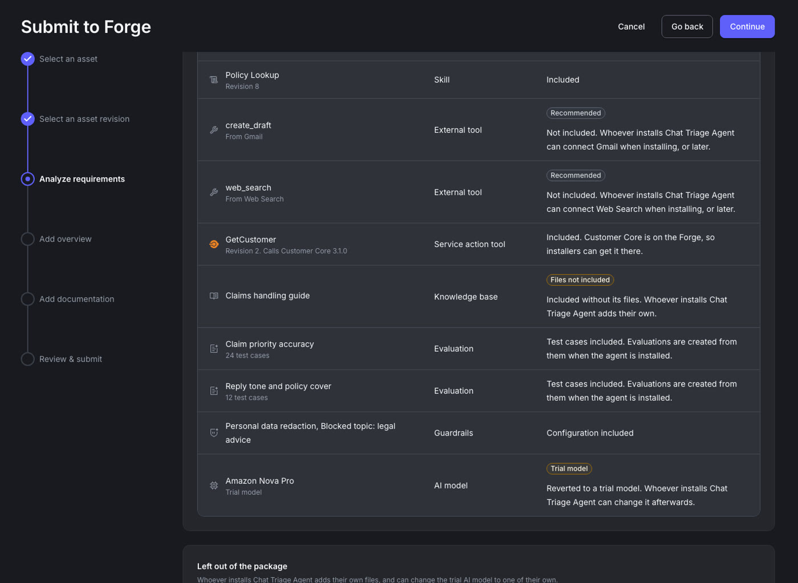
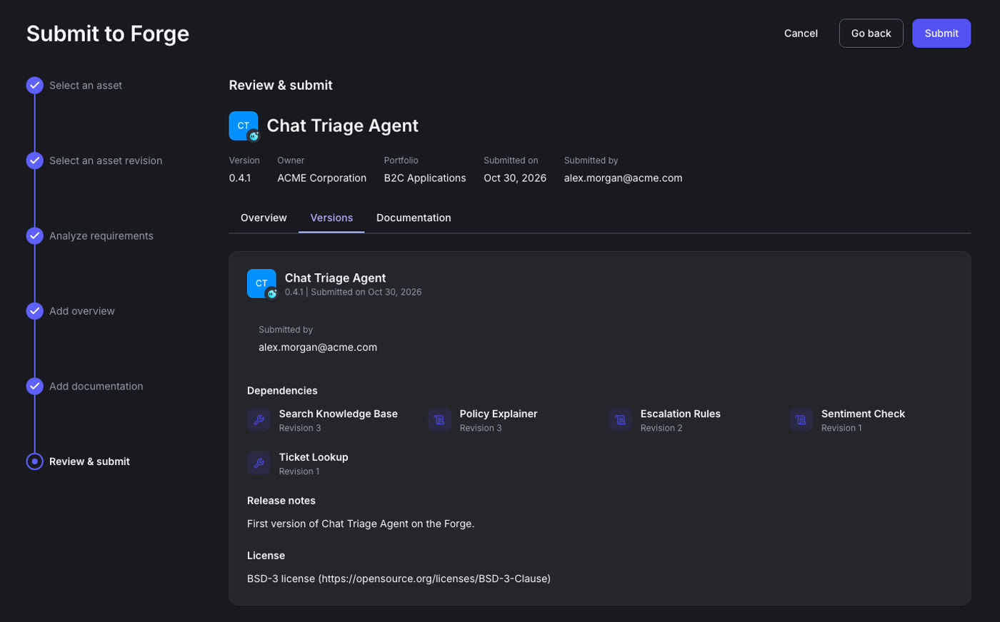
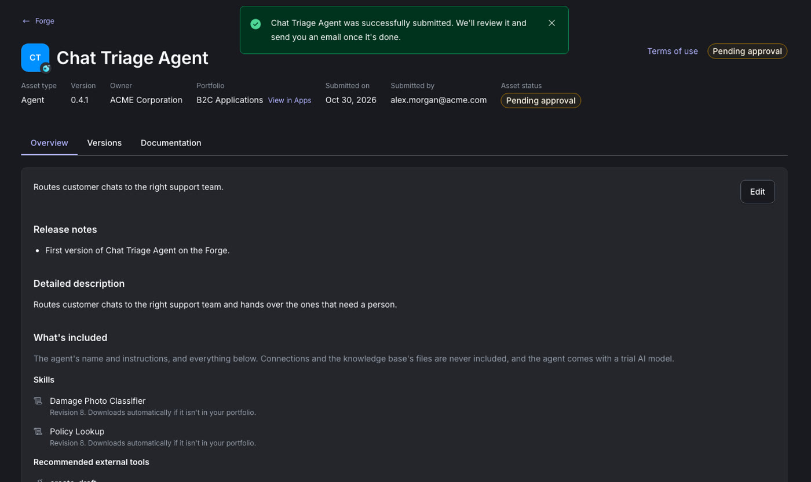
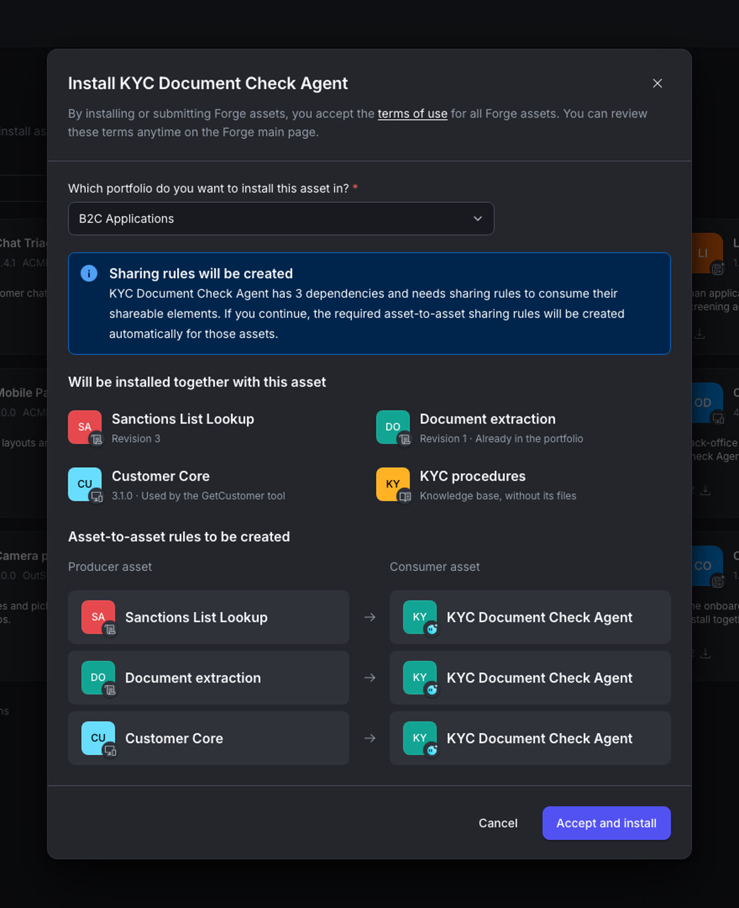

ODC Portal · Forge
Agents and skills on the Forge
What the live product does today, and what changes for Agents and skills.
Scroll, or use ↑ ↓ or the dots on the right to move between slides.
The Forge
A place to share and reuse
The Forge is a community-led marketplace inside ODC Portal. Individuals, teams and partners can publish assets, create solutions, and install those built by others into their own portfolio.
- BrowseSearch the catalog and filter it.
- SubmitPublish something you built, in six steps.
- InstallAdd it to a portfolio, with whatever it depends on.

In the live product today
Submitting was built for assets that stand alone
Six steps take an asset from your portfolio to a reviewed listing. Agents and skills aren't supported yet, and they need more than that.
- 1Select an asset
One list, split in two
The toggle separates assets from solutions, meaning it is not possible to drill down into asset types.
Dimmed cards say little
Dimmed cards cannot be selected and only unversioned libraries have a tooltip explaining why.
Name clash shows late
Names that have already been taken only come up at step 3, after two choices have been made.
- 2Select an asset version
Dependencies for agents
For agents, the dependencies need to show on this step, as they do for solutions, because they depend on the agent revision selected.
- 3Analyze requirements & dependencies
A new section for agents
The analysis checks the requirements of those dependencies and shows a new section only for agents: What the package carries, and Left out of the package.
- 4Add overview
- 5Add documentation
- 6Review & submit
The idea
An agent is a package
An agent is more than its instructions. What it can do depends on what's inside it: skills, tools, guardrails, knowledge bases and an AI model. So it's treated as something in between an asset and a solution.
stand aloneAgent packageSolution
assets built to ship together
Agents are submitted and installed as a package
Provide clear information to the user at all times, showing what is inside and allowing it
to be adjusted. Communicate clearly from the outset what cannot travel.
Step 1 · Select an asset
Pick from every type, in one list
The toggle changes to a drop-down that allows you to filter by asset type.
Test tenant, Nov 2026
ODC Portal prototype
Step 1 · Select an asset
Blockers show up on the first step
- Already on the Forge?Not listed.
- Same name as another asset?Dimmed with a tooltip: "Asset name is already in use".If a name clash only shows at step 3, it costs two steps of work. On step 1 it costs none.
- Not versioned yet?Dimmed with tooltip.Behaviour kept.
Step 2 · Select an asset revision
Dependencies, always in view
The dependency list reuses the current pattern of solutions: dependencies show and can be adapted before the analysis runs. The twist is that, for agents, the dependencies change depending on the revision selected, and each skill and tool has its own revision.

Test tenant, Nov 2026
ODC Portal prototype
Step 3 · Analyze requirements
The analysis looks at the package
The dependency list now lives on step 2, so the analysis is more focused. It looks at the agent as a whole: what the package carries and what it can't.
The step is renamed from "Analyze requirements & dependencies".
- What the package carries lists the instructions, skills, tools, knowledge base, evaluations, guardrails and AI model, each with what's included.
- Warnings are in the table, followed by short descriptions.

Step 3 · Analyze requirements
Some things stay behind, on purpose
Anything that is private or specific to you or an organisation is listed and does not travel with the package. The person installing the agent is prompted to fill those gaps during setup.
Tools and connections
Secrets and credentials never leave. External tools are only recommended: whoever installs the agent connects them, or not. Service action tools go with the agent.
Knowledge bases
The knowledge base comes without its documents. Whoever installs the agent links their own files afterwards.
AI model
The package carries a trial model as a default, an Amazon model, and the analysis says so. Whoever installs the agent can change it.
Steps 4 to 6 · Overview, documentation, review
Steps 4 to 6 work the same for every asset type
Submitting takes you straight to the asset's page, pending approval from Forge reviewers.


Installing an agent
Installing the agent installs its package
Pick a portfolio and the modal shows what comes with the agent, and what ODC will set up for it.
- Will be installed together.Its skills, the app behind each service action tool when it's on the Forge, and the knowledge base without its files.
- Sharing rules are created for youAnd shared with the agent, so it can use them.
- Skills already in the portfolioWill not be installed again, and the list says so.

Installing an agent
Finish setup picks up where the package stopped
Everything that couldn't travel becomes a step on the Finish setup panel. Edit in Agent editor unlocks when each one is done or dismissed.
- Change AI modelKeep the trial model or choose one of your organization's.
- Add filesLink your own documents to the knowledge base.
- Recommended connectionsConnect opens the Connections console. Dismiss the ones you don't need.
Walkthroughs
Watch both flows, start to finish
Summary
What changes for agents and skills
- Step 1: every type in one listA dropdown replaces the toggle, and blockers show on the first step.
- Step 2: dependencies with the revisionReuses the pattern from solutions but for agents, dependencies change depending on the picked revision.
- Step 3 and install: an agent is one packageThe analysis looks at the package, and installing it installs the package. What can't travel is set up by the user at the end.
- Skills follow the same flowWith their own checks on step 3, and nothing else to set up after installing.